PHYSICAL
LANDSCAPE
OF
WEB MAPPING APPLICATION
VERSION 1.0
CONTENTS
2.1 SETTING THE USER INTERFACE
5 COMPATIBILITYFig.2: Horizontal Panel
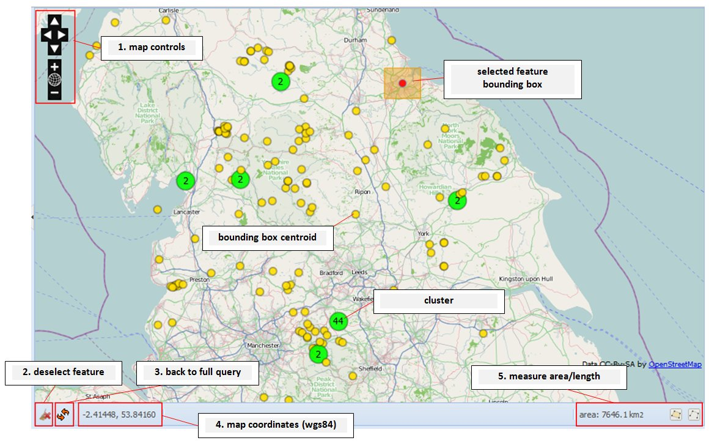
Fig.3: Map Panel
Cookies must be enabled.
The UI is composed of four main parts: the map panel, the vertical panel, the horizontal panel and the reference details panel. Users can customize the UI to their own preferences.
The vertical panel contains four tabs (Fig.1 point 1):
The horizontal panel contains a table with the query result and a sub panel showing the details of each selected bibliographic reference.
Query results are visualized on the map. The map shows the centroids of the bounding boxes. Dependent on scale, centroids can be grouped into clusters; each cluster shows the number of centroids it contains.
To access the query tools press the query tab on the vertical panel (Fig.4 point 1).
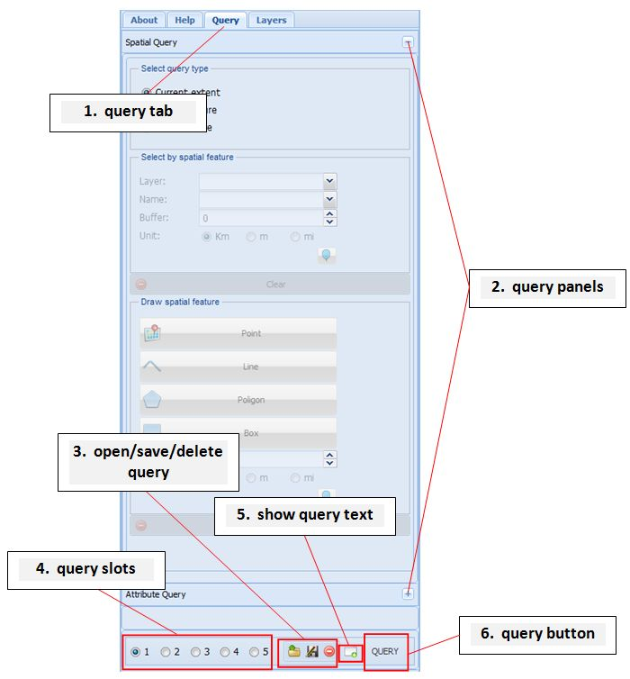
Fig.4 Query Tools
The upper part contains the panels with the tools to carry out queries; to open/close them press the +/- buttons (Fig.4 point 2).
The bottom part contains the tools to store/load query parameters and the button to execute the query.
The ‘Spatial query’ panel is used to carry out spatial queries. First it is necessary to choose the query type: the current map extent, the extent of a feature or a custom feature (Fig. 5).
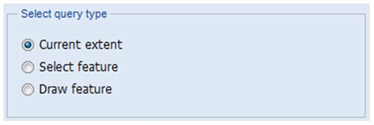
Fig.5 Query Type
· ‘current extent’ type will restrict the query to the area visualized on the map panel. So, if you want to make a national search you need to have the whole of UK showing.
· ‘select feature’ type will let the user choose a feature from the database. Features can be National Character Areas or other boundaries. The query will output only the references (defined by their bounding boxes) that intersect the feature boundary.
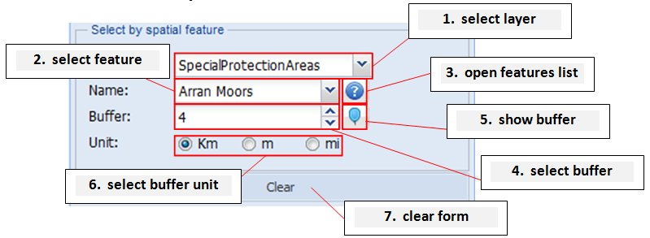
Fig.6 ‘select feature’ tools
To select a layer press the ‘select layer’ dropdown menu (Fig.6 point 1).
Then begin writing a name into the ‘select feature’ box (Fig.6 point2), a drop down menu will appear with available names; choose the feature from the dropdown menu. If you are not sure about a feature name press the button 'open features list' to show all the feature names for the selected layer. The map will automatically zoom to the feature. Click on ‘Query’ to run the query.
If you need a buffer, use the ‘select buffer’ box and choose the unit (kilometres, meters or miles) (Fig.6 point4-6). If you want to visualize the buffer on the map press the ‘show buffer’ button (Fig.6 point 5).
To clear the form and remove the feature from the map press the ‘clear form’ button (Fig.6 point 7).
· ‘draw feature’ lets the user draw a custom feature. The query will output only the references bounding boxes that intersect the custom feature.
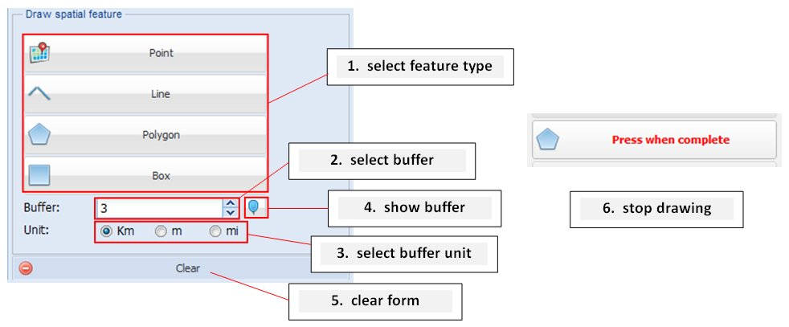Fig.7 ‘draw feature’ tools
First select a feature type: point, line, polygon or box (Fig.7 point 1).
Draw the feature on the map. To finish a line or a polygon just double click on the map.
To finish drawing press again the ‘feature type’ button (Fig.7 point 6).
If you need a buffer use the ‘select buffer’ box and choose the unit (kilometres, meters or miles) (Fig.6 point2-3). If you want to visualize the buffer on the map press the ‘show buffer’ button (Fig.6 point 4). Click the ‘Query’ button to run the query.
To clear the form and remove the feature from the map press the ‘clear form’ button (Fig.6 point 5).
Users can refine a query using the reference classification, the reference attributes and abstract keywords.
· bibliographic references are classified using a three level classification. The first level includes nine key terms, each one is linked to many second level key terms. The second level includes 164 key terms. Ten level 2 terms are linked to level 3 terms. See the appendix for the complete classification system.
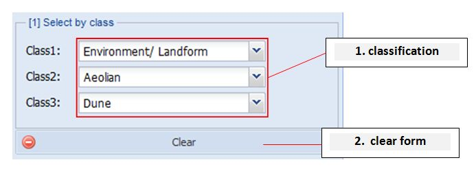Fig.8 ‘select by class’ tools
Select the first key term from the class 1 dropdown menu. A class 2 drop down menu will appear. If you want to specify a class 2 key term use the class 2 dropdown menu. For some class 2 key terms a class 3 drop down menu will appear. If you want to specify a class 3 key term use the class 3 dropdown menu.
To clear the form press the ‘clear form’ button (Fig.8 point 2).
· To query the database using reference attributes use the ‘select by attribute’ tools
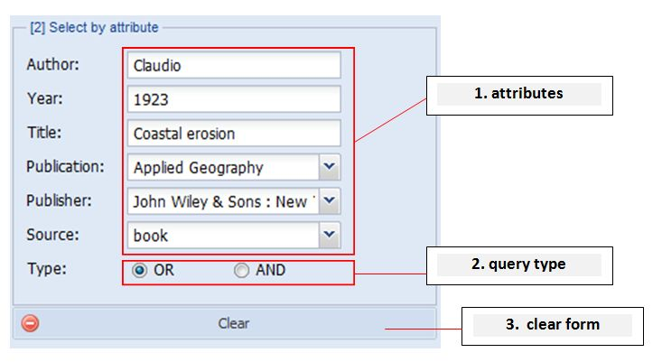
Fig.9 ‘select by attribute’ tools
Insert a search term in the fields you want to query (Fig.9 point 1). These include the author name, the publication year, one or more title keywords, publication name, publisher name and source type. Publication name, publisher name and source type must be selected using the drop down menus.
The query ‘type’ field changes the type of search (Fig.9 point 2); if you want all fields then use ‘AND’, if you want any field then use ‘OR’. For instance, if you enter Booker (Author) and 1966 (Year), selecting ‘AND’, the result will contain references that include both search terms. If you choose ‘OR’ the result will contain references with either search term.
To clear the form press the ‘clear form’ button (Fig.9 point 3).
· To query reference abstracts scroll down to the ‘select by abstract keyword’ tool
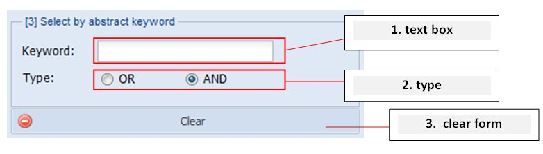
Fig.10 ‘select by abstract keyword’ tools
Insert one or more keywords in the text box and choose the type. The ‘AND’ type will select the references with an abstract containing all the keywords. The ‘OR’ type will select references with an abstract containing one or more keywords.
To clear the form press the 'clear form' button (Fig.10 point 3).
At the bottom of the query tab there are tools to store queries.
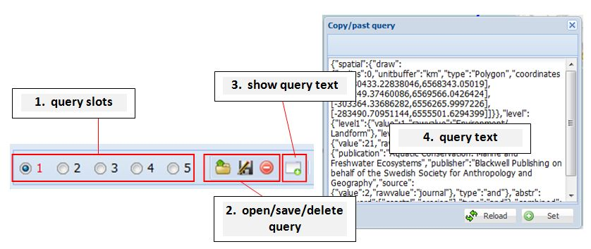
Fig.11 Save/load queries
Query parameters are saved using the HTML5 localstorage. Localstorage availability is checked before the application starts, therefore if the browser does not support it both the query slots and the open/save/delete buttons will not be available. If the user closes the browser and does not clear the cache the query will be available the next time the browser is reopened.
To store a query choose one of the five slots and press the save button (Fig.11 point 1-2). The parameters of the ‘spatial query’ and the ’attribute query’ panels will be saved. The slot number will become red.
To open a query and fill both the ‘spatial query’ and the’ attribute query’ panels choose a red slot and press the open button.
To delete a query from localstorage choose a red slot and press the delete button.
If the browser does not have localstorage or you want to copy and paste the query press the ‘show query’ button. A window will open; there you can copy and paste the query and fill both the content of the ‘spatial query’ and the ’attribute query’ panels pressing the ‘Set’ button.
After filling the ‘spatial query’ and the ’attribute query’ panels you can query the database pressing the ‘query’ button located at the bottom of the query tab. If there are errors they will be shown in red at the bottom of the query tab (e.g. a custom polygon is self-intersecting)
Results will be shown both on the table and on the map.
Each table row represents a bibliographic reference.
Selecting a row selects the corresponding bounding boxes on the map. Each reference can have one or more bounding boxes. With the zoom button (Fig.2 point 7) the user can zoom to the reference extent, if the reference has more bounding boxes the user can zoom to each bounding box (Fig.2 point 8).
After selecting a row it is possible to access the reference details using the tabs or pressing the buttons on the table row (Fig.2 point 9). Details include information about the reference, the abstract and scanned maps and images.If there are images or maps double click their thumb to show the full size picture.
If the query included one or more abstract keywords they will be highlighted in the abstract tab.
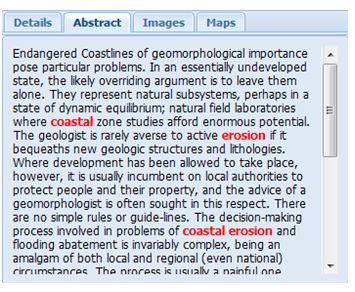
Fig.12 abstract keywords
Table rows can be grouped by source as shown in Fig.13, grouping is also available for year, publication, publisher, place and NCA; table rows can be sorted by pressing the column name and selecting sort ascending or sort descending. It is also possible to show/hide columns.
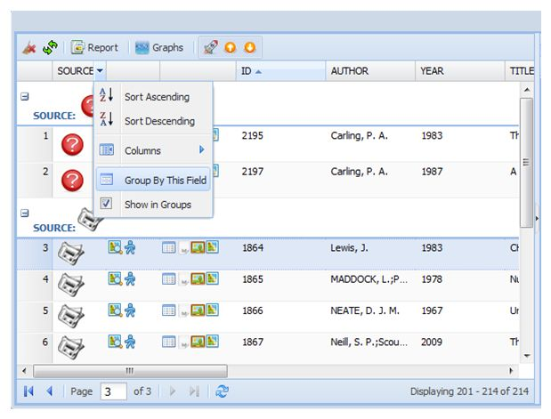Fig.13 using the table
To delete the result from both the table and the map press the 'delete' button above the table (Fig.2 point 3).
The map shows the centroids of the bounding boxes. Dependent on scale, centroids can be grouped into clusters; each cluster shows the number of centroids it contains.
Points can appear outside the selected area (screen, feature or custom feature). This happens because the result considers the intersection between the bounding boxes and the selected area but centroids are often located far from the area. Furthermore a reference can have more than one bounding box and the selection considers a reference, not single bounding boxes, therefore all the bounding boxes for a reference are selected even if the intersection happens with only one reference bounding box.
Selecting a centroid shows its bounding box. If a reference more than one bounding box all the other centroids are selected and all the bounding boxes are displayed. To zoom to each bounding box press the browse button for the selected row on the table (Fig.2 point 9).
Selecting a cluster selects all the cluster centroids.
When selecting on the map the table shows only the data about the selected reference.
To deselect features press the ‘deselect’ button above the table or below the map (Fig.3 point 2/Fig.2 point 1).
To restore the table with the original query data press the ‘back to query’ button above the table or below the map (Fig.3 point 3/ Fig.2 point 2).
Reference classification can be compared using a graph. Press the button to open a radar graph (Fig14 point1). This graph is used to show the level 1 classification for a selected reference. To compare references select the table rows; selecting a row will update the graph.
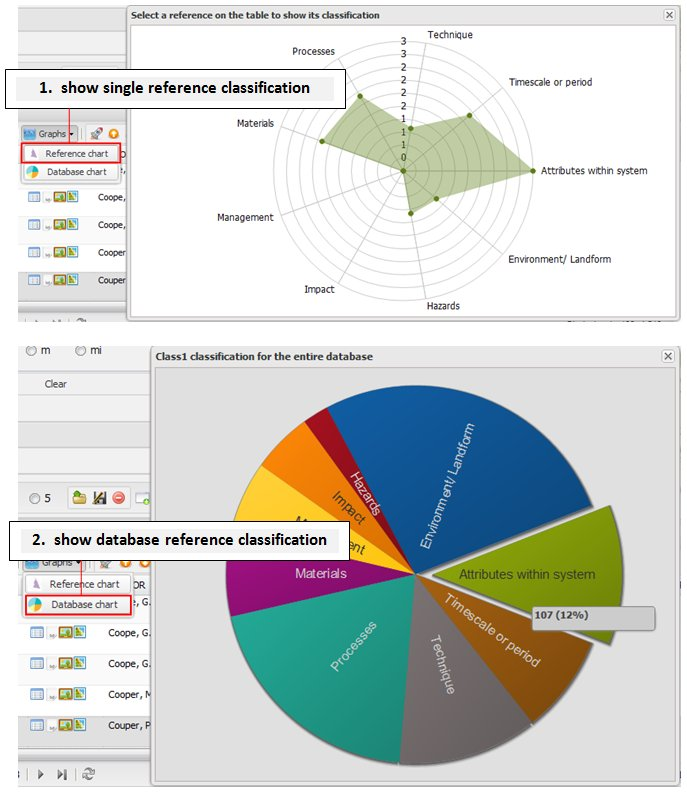Fig.14 graphs
To know more about the entire database classification, use the button to open a pie graph (Fig14 point2). Each slice shows the total number of references for a class.
A report can be downloaded pressing the ‘download report’ button (Fig.15 point 1). A window with various options will open.
References details can be downloaded as a PDF, EndNote XML or a CSV file. Spatial data can be downloaded as a GeoJSON or a KML file. Other options are: adding the abstracts to the PDF/EndNote, choosing the CSV delimiter, adding a title to the PDF.
The output can be a single row, multiple rows, the current page (in Fig.15 this would be page 1, 100 references) or the whole query (in Fig 15 this would be pages 1 to 4, 308 references). For multiple rows select the 'Multiple rows' option and click on the table rows whilst pressing the Ctrl or the Shift button on the keyboard.
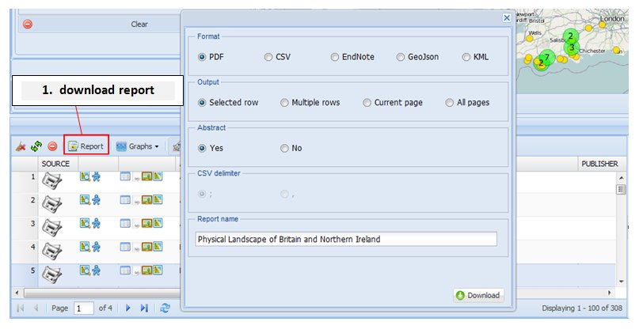
Fig.15 Report download download
Importing references in EndNote
1) In the EndNote Library select "Import" from the "File" menu.
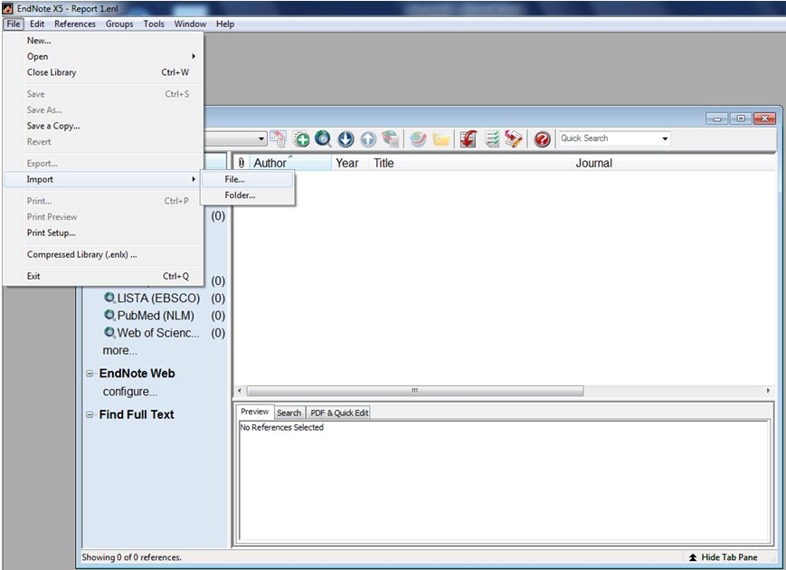
2) Browse and select the file to import
3) Choose the "EndNote generated XML" option from the dropdown list for "Import Option"
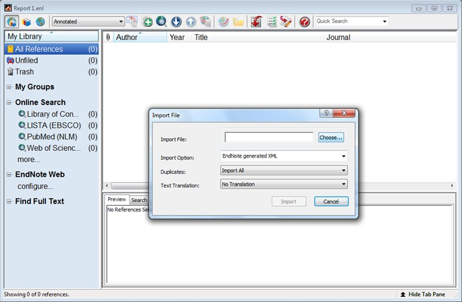
The application has been tested on the latest versions of Mozilla Firefox, Google Chrome, Opera, Apple Safari and on Microsoft Internet Explorer 7+.
The application is not compatible with Internet Explorer 6. Please, avoid using Microsoft Internet Explorer if you do not have a powerful computer.
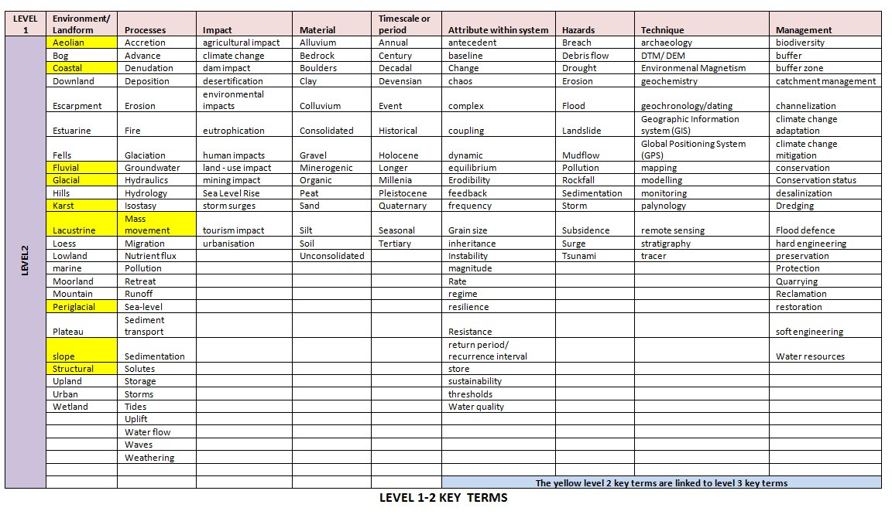
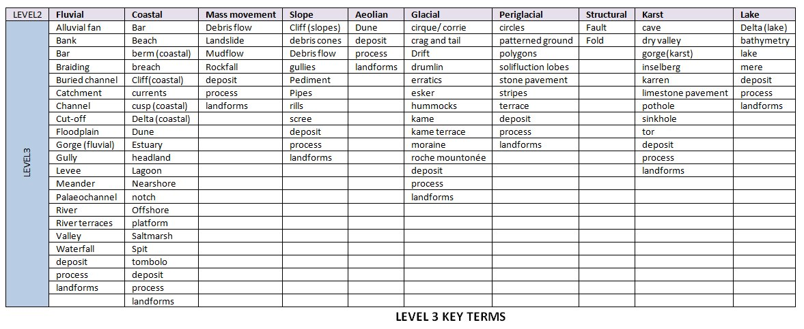